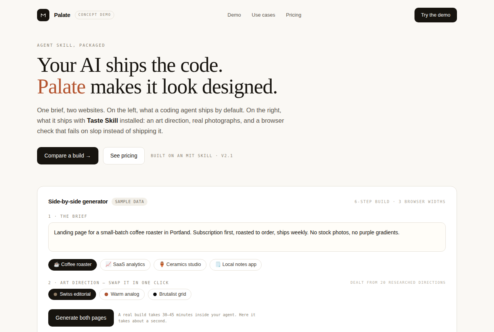

Taste Skill：让AI网页设计有品味
Leonxlnx/taste-skill · AI应用MIT⭐ 104,379

Leonxlnx/taste-skill 是一个给编码 AI 加“设计品味”的 Agent Skill。装进 Claude Code 或 Codex 后，AI 不再是套模板生成千篇一律的落地页，而是先做艺术方向、找真实图片，再用浏览器亲自检查页面丑不丑。从 README 看，它基于对 247 个精选网站的研究，构建流程分六步：读 brief、三选一风格方向、提炼核心概念、从开放图库找配图并标注来源、在三种宽度下用真实浏览器检查、看截图修掉前三名问题。一个页面跑下来约 30-45 分钟、几十万 token。最近涨得快，是因为 AI 编程已经能跑通，但“生成的前端太丑”是几乎所有人都能感知的痛，这个项目 demo 效果直接。做成产品的机会在于：把命令行流程包成网页版，提供并排风格对比、一键换方向、托管浏览器检查，对没有设计师的独立开发者按订阅收费。
今日 Top 5
| # | 项目 | 传播 | 创业 | 综合 |
|---|---|---|---|---|
| 1 | Leonxlnx/taste-skill | 8.0 | 7.65 | 7.84 |
| 2 | pbakaus/impeccable | 8.0 | 6.9 | 7.78 |
| 3 | obra/superpowers | 8.0 | 7.15 | 7.61 |
| 4 | t3dotgg/tstack | 7.67 | 7.6 | 7.42 |
| 5 | ly05010419/MacNativeGames | 9.0 | 6.4 | 7.34 |